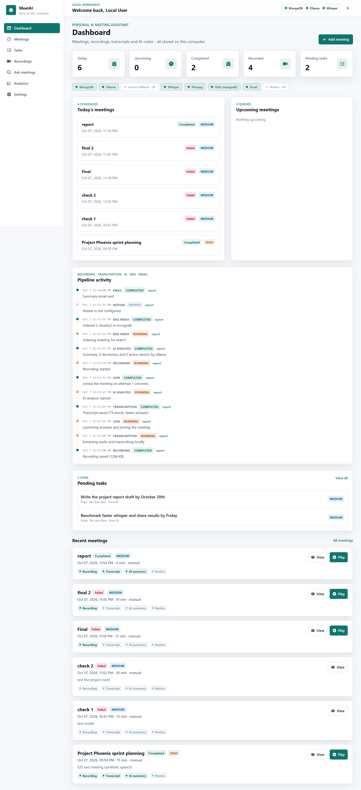
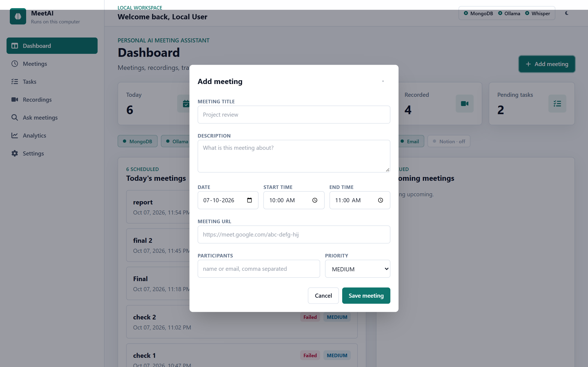
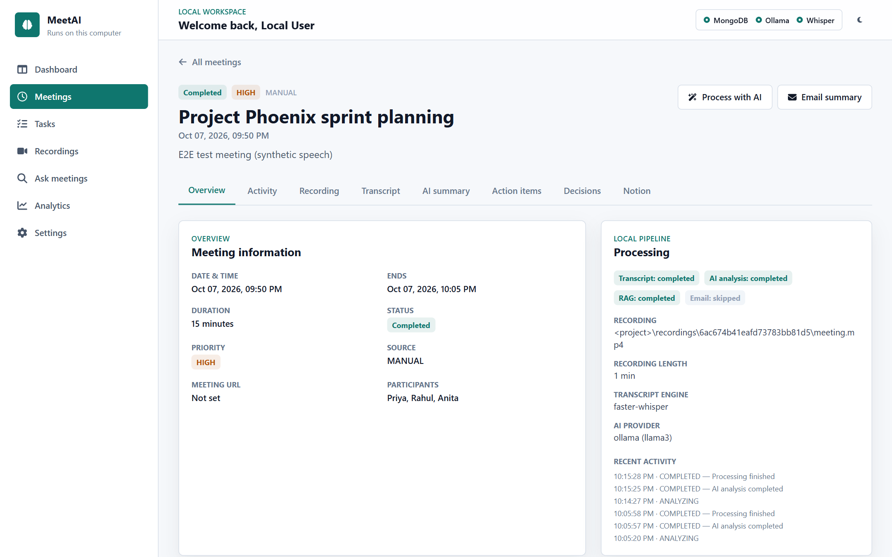
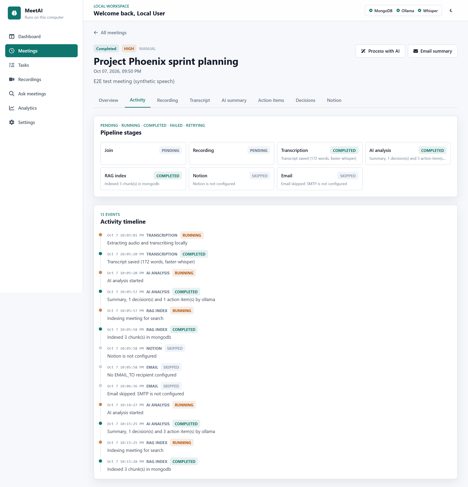
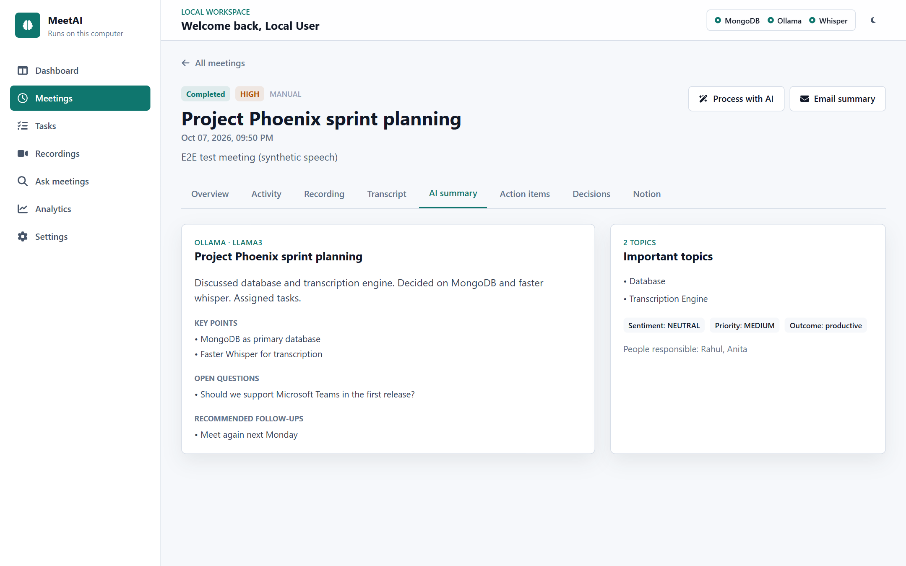
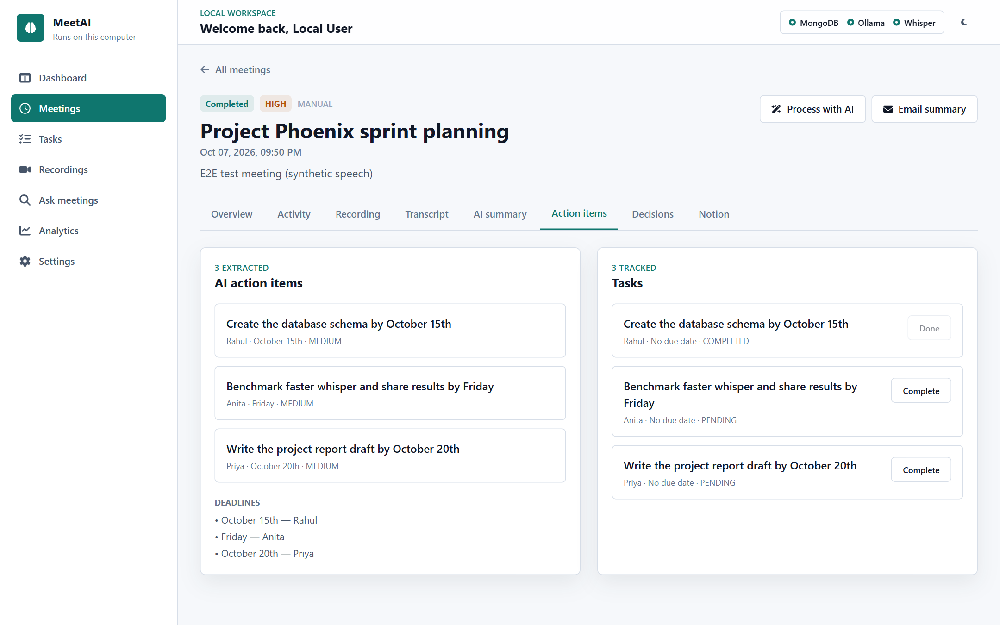
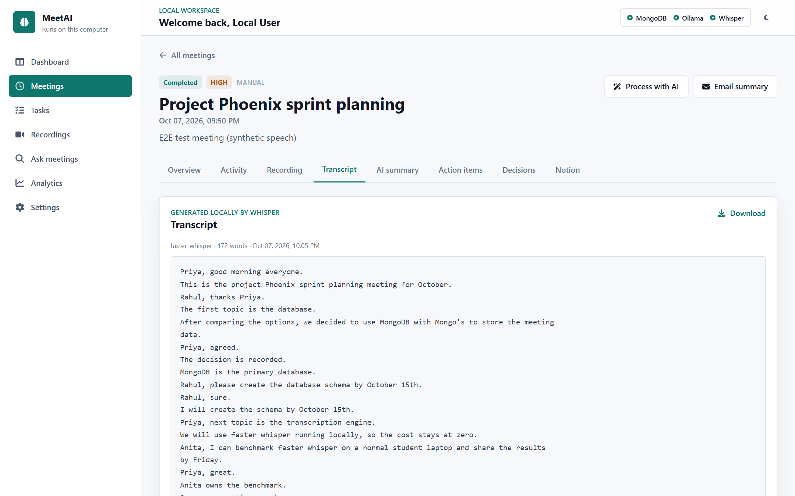
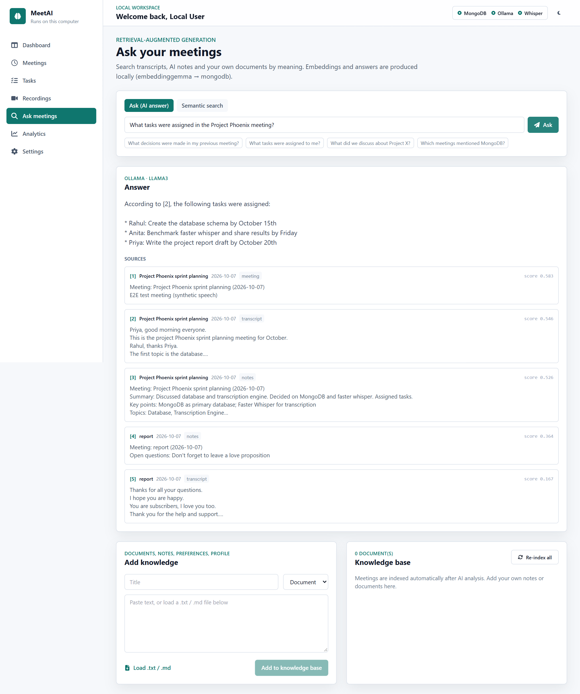
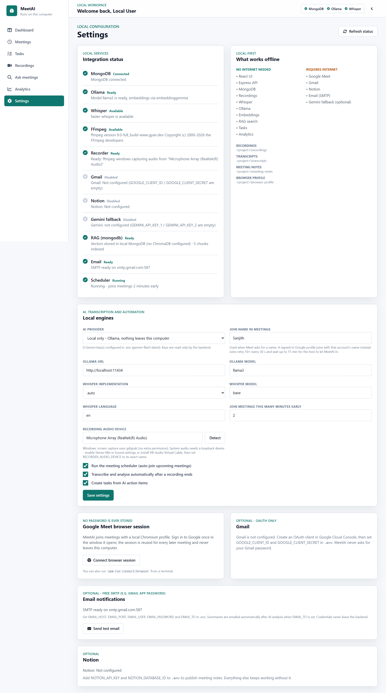
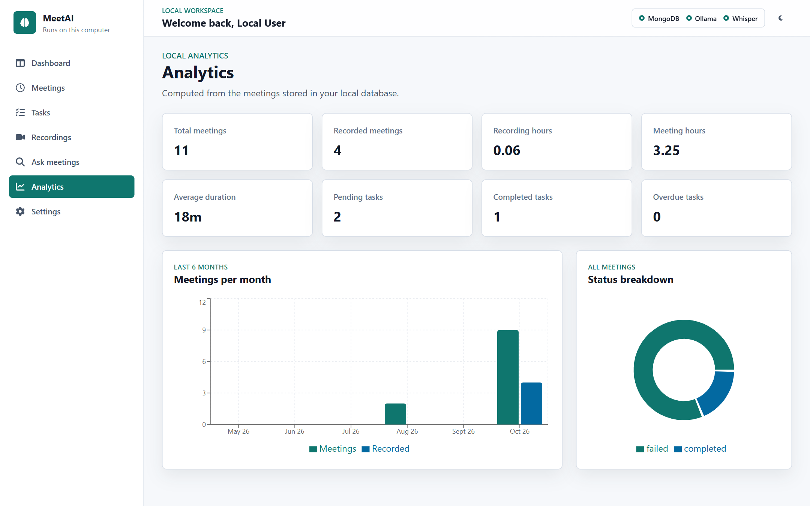

A free, local-first assistant that joins Google Meet, records with FFmpeg, transcribes with faster-whisper, analyses with Ollama (llama3), falls back to two Gemini API keys, and answers questions about past meetings through RAG (embeddinggemma + ChromaDB/MongoDB).
| Project | MeetAI (repository MeetAi-main) |
| Submitted by | ________________________________ |
| Register number | ________________________________ |
| Guide | ________________________________ |
| Department / Institution | ________________________________ |
| Date | October 2026 |
| Platform | Windows 11 · Node.js 24 · MongoDB 8 · Ollama 0.30 · FFmpeg 9 · Python 3.10 |
MeetAI is a local-first AI meeting and productivity assistant for a normal student laptop. It schedules and joins Google Meet meetings through Playwright with a persistent browser profile, records the screen and audio with FFmpeg, transcribes the recording with faster-whisper, and analyses the transcript with a local Llama 3 model served by Ollama. The analysis produces structured meeting intelligence: a summary, key points, decisions, action items with owners and deadlines, open questions and follow-ups. The system then creates tasks, indexes everything for retrieval-augmented question answering with the embeddinggemma embedding model, and optionally emails the summary or publishes it to Notion.
This report documents an engineering audit and repair of the existing project. A complete inspection found 42 issues, including a committed API token, a model default that Google has shut down, missing AI fallback, missing RAG, network exposure of an authentication-free API, and several Windows-specific crashes. 40 of them were fixed and verified. The work added an AI Service Manager (Ollama → Gemini key 1 → Gemini key 2), a RAG subsystem (ChromaDB or MongoDB vectors), an email service, per-stage activity tracking and centralised error handling. The automated test suite grew from 62 to 122 tests, and a live end-to-end run on real local models passed 23 of 23 steps. Every core component is free and runs offline. Cloud services are optional fallbacks.
Students and small teams spend many hours in online meetings, but decisions and action items are rarely captured in a searchable form. Existing meeting assistants are mostly paid cloud services that upload private audio to third-party servers, need subscriptions, and cannot answer questions across a personal meeting archive. A student with little or no budget needs a tool that:
The inspected repository (commit 852a61a plus uncommitted work) already had a solid base. It had a React 18 + TypeScript + Vite dashboard, an Express 4 API with MongoDB/Mongoose, a Playwright Google Meet bot, an FFmpeg recorder, local Whisper transcription, an Ollama analysis step with Joi-validated JSON, optional Gmail and Notion integrations, and 62 passing tests. Type-checking, linting and the production build were all clean.
The inspection found the following limitations:
gemini-2.0-flash) has been shut down by Google. Ollama was called without num_ctx, so long transcripts were silently truncated..env.example, self-registration as ADMIN, reflected XSS in the OAuth callback, regex injection in search, and an authentication-free API reachable from the local network..env pointing FFmpeg to another user's folder, a device list that FFmpeg 9 never populated, and a Vite watcher that crashed while a recording was being written.The proposed system keeps the working architecture and code. Broken parts were repaired, and the missing subsystems were added behind clean service abstractions:
| Area | Proposed design |
|---|---|
| AI | AIServiceManager with OllamaProvider and one GeminiProvider per key. Modes: auto / ollama / gemini. Retries, cooldowns and a permanent blacklist for invalid keys. |
| Analysis | Extended schema (title, short and detailed summary, key points, questions, follow-ups, meeting outcome), map-reduce for long transcripts, tolerant normalisation. |
| RAG | Overlapping chunking, local embeddinggemma embeddings, ChromaDB when configured, otherwise a MongoDB vector store with automatic fallback. Q&A with citations. |
EmailService over plain SMTP (free Gmail App Password), EmailLog audit, SKIPPED when not configured. | |
| Tracking | ActivityLog plus meeting.stages (PENDING / RUNNING / COMPLETED / FAILED / RETRYING / SKIPPED), shown on the dashboard and in the meeting Activity tab. |
| Robustness | Stage retry for transient failures. A failed analysis still makes the transcript searchable. One error envelope with error codes. |
| Security | Localhost binding, auth rate limiting, role-escalation fix, XSS and regex escaping, ObjectId guard, secret redaction in logs, dependency audit at 0 production vulnerabilities. |
| Feature | Status |
|---|---|
| Manual meeting creation, list, search, filters, edit, soft delete | Implemented + Tested |
| Auto-join scheduler and Playwright Meet bot (persistent profile, Chrome → Edge → Chromium) | Implemented + Tested (tested against a local Meet mock page) |
| FFmpeg screen and audio recording with device validation | Implemented + Tested |
| Local transcription (faster-whisper; openai-whisper and whisper.cpp supported) | Implemented + Tested (faster-whisper) |
| AI analysis with validated JSON and map-reduce for long meetings | Implemented + Tested |
| Ollama → Gemini key 1 → key 2 fallback with error classification | Implemented + Tested (live against the real Gemini API with invalid keys; successful Gemini call not tested) |
| Automatic tasks from action items (de-duplicated) | Implemented + Tested |
| RAG search and Q&A over meetings and personal documents (MongoDB / ChromaDB) | Implemented + Tested |
| Email summary, transcript, action items, test and daily digest | Implemented + Tested (SMTP delivery not tested: no credentials) |
| Activity timeline, stage states, dashboard health strip | Implemented + Tested |
| JWT multi-user mode (register, login, refresh, logout) | Implemented + Tested |
| Notion page publishing | Implemented + Not tested (no token available) |
| Gmail invitation detection (OAuth) | Implemented + Not tested (parser unit-tested; no OAuth client) |
| Daily digest scheduling (digest function exists; no cron trigger yet) | Partially implemented |
| Speaker diarisation, real-time live transcription | Planned |
MeetAI is a classic three-tier local application. A single-page React dashboard talks only to the local Express API through Vite's dev proxy, or from the same origin in production. The API delegates every capability to a service layer, and the services drive local tools (Chrome, FFmpeg, Python Whisper, Ollama, MongoDB, the file system) and optional internet services.
| Layer | Technology (version in use) | Purpose |
|---|---|---|
| Frontend | React 18.3.1 | UI |
| Language | TypeScript 5.9 (frontend), JavaScript ES modules (backend) | Type safety / runtime code |
| Styling | Tailwind CSS 3.4 | Utility-first UI styling |
| Build | Vite 6.4 | Dev server, proxy, production build with vendor chunks |
| State / data | TanStack Query 5, axios 1.18 | Server state, polling, API client with token refresh |
| Backend runtime | Node.js 24.18 (≥ 20.11 supported) | Runtime |
| API | Express 4.22 | REST API |
| Database | MongoDB 8.0.1 (local) | Application data and fallback vector store |
| ODM | Mongoose 8.24 | MongoDB access, schemas, indexes |
| Authentication | jsonwebtoken 9 | Access and refresh JWTs |
| Password | bcryptjs 2.4 | Password and refresh-token hashing |
| Validation | Joi 17.13 | Request and AI-output validation |
| Security | Helmet 8, express-rate-limit 7, cors, hpp, express-mongo-sanitize | HTTP hardening |
| Logging | winston 3.19, morgan | app / error / ai / meeting logs with redaction |
| Browser automation | Playwright 1.62 + system Chrome/Edge | Meeting automation |
| Recording | FFmpeg 9.0 (gdigrab + dshow) | Screen and audio capture, audio extraction |
| Transcription | faster-whisper 1.2.1 (Python 3.10) | Local speech-to-text |
| Local AI | Ollama 0.30.6 · llama3 (8B Q4) | LLM inference |
| Embedding | embeddinggemma (300M, 768-d) via Ollama | RAG embeddings |
| Vector DB | ChromaDB 1.5.9 (optional) / MongoDB RagChunk | Vector search |
| External AI | Gemini API (gemini-flash-latest), 2 keys | Optional fallback |
| nodemailer 10.0.16 + any SMTP (Gmail App Password) | Notifications | |
| Integrations | Notion REST API, Gmail REST API (OAuth) | Optional sync and meeting detection |
| Testing | Vitest 2.1, Supertest | 122 automated tests |
The dashboard (src/) is a React Router SPA. AppLayout provides the sidebar and top bar. Pages are Dashboard, Meetings, Meeting details (Overview, Activity, Recording, Transcript, AI summary, Action items, Decisions, Notion), Tasks, Recordings, Ask meetings (new), Analytics and Settings. All data access goes through services/api/meetaiApi.ts and TanStack Query hooks in services/queries.ts. Busy meetings poll every 4 seconds, and the dashboard activity feed refreshes every 15 seconds.
client.ts): reads the new error envelope (error.code, error.message). With AUTH_ENABLED=true, a 401 triggers one shared /auth/refresh call and the original request is retried. A failed refresh logs the user out cleanly.VITE_* secrets. Gemini, SMTP and Notion keys never reach the browser, and the settings endpoint only returns presence flags such as geminiKeyCount.Activity.tsx (stage grid and timeline), KnowledgePage.tsx (RAG ask, search and document upload), the system status strip on the dashboard, and the email and provider controls in Settings.The backend (server/src) follows a layered structure: routes → middlewares → controllers → services → models.
| Layer | Contents |
|---|---|
| config/ | env.js (new and legacy variable names, Notion URL→ID parsing, derived refresh secret), paths.js (managed folders, path guard), database.js |
| middlewares/ | auth.js (JWT or local owner), validate.js (Joi), security.js (Helmet, CORS, HPP, sanitise, global and auth limiters), errorHandler.js (central envelope) |
| controllers/ | meeting, task, analytics, notification, system, integration, rag, activity (email and AI status) |
| services/ai/ | errors.js, ollamaProvider.js, geminiProvider.js, aiServiceManager.js, prompt.js, validation.js, index.js |
| services/rag/ | chunker.js, vectorStores.js (ChromaDB v2 REST client + MongoDB store), ragService.js |
| services/pipeline/ | meetingPipeline.js (orchestrator with stage tracking and retry), jobQueue.js (durable serial background queue) |
| services/… | automation (Playwright), recording, media (FFmpeg), transcription, mail, activity, notion, gmail, scheduler, status |
MongoDB stores metadata only. Large artefacts (MP4, transcript, Markdown notes) stay on disk, and only their paths are stored. Every user-owned collection carries an owner reference, and every query filters by it, which isolates each user's data. User, Meeting, Task and Notification use soft delete (isDeleted, deletedAt) through a shared schema plugin.
| Requested entity | Implementation | Reasoning |
|---|---|---|
| User | User | unique email, bcrypt hash (select:false), role, status |
| Meeting | Meeting | lifecycle status, recording/transcript/aiAnalysis sub-documents, stages, rag, email |
| Transcript | Meeting.transcript + transcripts/<id>/transcript.txt | 1:1 with meeting; a separate collection would duplicate data |
| MeetingNote | Meeting.aiAnalysis + meeting-notes/<id>/summary.md | 1:1 with meeting |
| ActionItem | Meeting.aiAnalysis.actionItems[] + Task | Tasks are the editable, trackable form of action items |
| ActivityLog | ActivityLog (new) | timeline rows; indexes {meeting, createdAt} and {owner, createdAt} |
| Integration | Setting + .secrets/ token files | secrets are never stored in MongoDB |
| EmailLog | EmailLog (new) | audit of every attempt; never stores the body or credentials |
| (RAG) | RagChunk, RagDocument (new) | local vector store and knowledge documents |
| (jobs) | ProcessingJob | durable background job progress |
All model access goes through one class, AIServiceManager. Controllers never call a provider directly, so AI logic exists in one place only. Callers ask for a completion (generate) or embeddings (embed). The manager picks the provider chain, retries and falls back, and reports which provider answered together with every attempt.
Meeting analysis. analyzeTranscript() builds a strict JSON prompt. If the transcript is longer than AI_ANALYSIS_CHUNK_CHARS (12,000), it first condenses each part to factual notes (map) and then analyses the combined notes (reduce). The reply is extracted (code fences and prose are tolerated), validated with Joi and normalised: placeholder words such as "N/A" are removed, unknown enum values become MEDIUM or NEUTRAL, and an empty short summary is derived from the summary. If no valid JSON can be extracted, one correction prompt is sent. If that also fails, the stage is marked FAILED and the recording and transcript are kept for a retry.
/api/generate for completions (format:"json", temperature 0.2, num_ctx = OLLAMA_NUM_CTX, default 8192), /api/embed for batched embeddings, and /api/tags for health (whether the chat and embedding models are pulled).OLLAMA_CHAT_MODEL=llama3 and OLLAMA_EMBEDDING_MODEL=embeddinggemma. Other installed models such as codeAI and grammerAI (both llama3-based) can be selected in Settings.ollama pull hint.| Failure | Detection | Action |
|---|---|---|
| Rate limit | HTTP 429 without quota wording | Key cools down (Google retryDelay or 60 s); next key |
| Quota exceeded | HTTP 429 + quota / per-day / billing | Key cools down 1 h; next key |
| Invalid / revoked key | 400 API_KEY_INVALID / 'API key not valid', 401, 403 | Key disabled for the process lifetime; never retried |
| Timeout | AbortController (GEMINI_TIMEOUT_MS = 60 s) | Retried once on the same key |
| Temporary failure | 5xx | Retried once, then next provider |
| Retired model | 404 | MODEL_NOT_FOUND (5-minute cooldown) with a clear message |
| Everything failed | — | 503 AI_PROVIDER_UNAVAILABLE with a per-provider summary |
Keys are read only from .env, sent only in the x-goog-api-key header (never in a URL), and never included in error messages. Log lines are also scrubbed of key-shaped strings (AIza…, ntn_…, bearer tokens, JWTs). Privacy controls: AI_PROVIDER=ollama never contacts Gemini, AI_CLOUD_FALLBACK=false disables the automatic fallback, and RAG answers use cloud models only when RAG_ALLOW_CLOUD=true.
Free-tier note: Google publishes per-project limits in AI Studio rather than as fixed numbers, and may use free-tier prompts to improve its products. This is why Gemini is a fallback, not the default.
CHROMA_URL is set and its heartbeat answers; otherwise MongoDB (RagChunk) with cosine similarity computed in Node. The choice is re-checked every minute, and falling back is logged.owner; retrieval filters by owner, and optionally by meeting. Deleting a meeting removes its vectors.[n] citations. Re-indexing everything after switching stores is one click.The scheduler checks every 30 seconds for UPCOMING meetings with autoJoin that start within the join offset (and started less than 15 minutes ago). The Playwright bot launches a persistent context on browser-profile/, trying Chrome, then Edge, then bundled Chromium. It fills the display name, turns the microphone and camera off, and clicks the join action. Join detection is anchored so that buttons such as "Other ways to join" are never clicked. A monitor polls every 20 seconds for the end of the call (left / removed / no Leave button) and stops the recorder automatically. The bot never handles a Google password: the user signs in once in the profile window.
Before recording, the recorder checks that FFmpeg is available and that the configured DirectShow audio device exists. FFmpeg 9 exits with code 0 when listing devices, which the original parser did not handle. It refuses to make a silent recording unless RECORDER_ALLOW_VIDEO_ONLY=true, and stops gracefully by sending q so the MP4 container is finalised. Distinct, actionable errors are reported for: FFmpeg missing, wrong path, unknown device, empty or missing output file, and recording disabled.
The pipeline extracts 16 kHz mono PCM audio from the MP4, auto-detects the installed engine, and runs it with Hugging Face symlinks disabled (this avoids Windows error 1314 without administrator rights). CUDA failures fall back to the CPU. Progress updates are throttled to one database write every 3 seconds. The transcript is saved as transcripts/<meetingId>/transcript.txt and linked to the meeting. The WAV intermediate is removed and the MP4 is kept. A failure records the error on the meeting and never deletes the recording.
EmailService (mailService.js) exposes sendMeetingSummary, sendTranscript, sendActionItems, sendNotification and sendDailyDigest. All user content is HTML-escaped. Sends never throw: the result is SENT, FAILED (with the SMTP error) or SKIPPED, and every attempt is written to EmailLog. The recommended free option is Gmail SMTP with an App Password (about 500 messages per day). Credentials are read only from .env, and connection timeouts are bounded.
| Control | Implementation |
|---|---|
| Network exposure | API and Vite bind to 127.0.0.1 by default (verified: LAN-IP requests refused). HOST=0.0.0.0 logs a warning when auth is off |
| Authentication | JWT access (15 min) and refresh (7 days, bcrypt-hashed, revoked on logout); a refresh token is rejected as an access token |
| Passwords | bcrypt (12 rounds); hashes never selected or returned |
| Authorization | every query is owner-scoped; cross-user GET/PATCH/DELETE return 404; self-registration cannot set a role |
| Validation | Joi on every write; router.param('id') ObjectId guard; regex-escaped search; capped list limits |
| Injection | express-mongo-sanitize, HPP; child processes spawned with argument arrays, no shell |
| XSS | OAuth callback page and emails HTML-escaped; React escapes by default |
| Path traversal | files are only streamed when inside the managed recordings, transcripts or notes folders |
| Rate limiting | 2,000 requests per 15 min globally; 20 per 15 min on login, register and refresh |
| Secrets | .env only, git-ignored; logger redacts secret keys and key-shaped strings; status endpoints expose presence flags only |
| Dependencies | npm audit --omit=dev: 14 → 0 vulnerabilities (safe updates + nodemailer 10) |
HTTP handlers never wait for Whisper or the LLM. POST /process returns 202 with a durable ProcessingJob. One job runs at a time, because Whisper and Ollama each want the whole CPU. Each stage writes its state into meeting.stages and an ActivityLog row, which the UI polls.
Base URL http://127.0.0.1:5000/api/v1; Swagger UI at /api-docs. Successful responses use { success:true, message, data, meta? }. Errors use { success:false, message, error:{ code, message, details? } }.
| Group | Endpoints |
|---|---|
| Auth | POST /auth/register · /auth/login · /auth/refresh · /auth/logout · GET /auth/me |
| Meetings | GET/POST /meetings · GET/PATCH/DELETE /meetings/:id · GET …/recording (Range) · …/transcript · …/notes · …/job · …/activity |
| Automation | POST /meetings/:id/start · /stop · /process · /index · /email |
| Tasks | GET/POST /tasks · PATCH/DELETE /tasks/:id |
| RAG (new) | GET /rag/status · POST /rag/search · POST /rag/ask · GET/POST /rag/documents · DELETE /rag/documents/:id · POST /rag/reindex |
| Activity & email (new) | GET /activity · POST /email/test · GET /email/log · GET /system/ai · POST /system/ai/reset |
| System | GET /system/status · GET/PATCH /system/settings · GET /system/audio-devices · GET /analytics · /notifications |
| Integrations | Gmail connect/callback/status/sync/disconnect · Notion status · browser connect/status |
Error codes in use: VALIDATION_FAILED (422), INVALID_ID / INVALID_JSON (400), UNAUTHORIZED / TOKEN_EXPIRED / INVALID_TOKEN (401), FORBIDDEN (403), NOT_FOUND / ROUTE_NOT_FOUND (404), CONFLICT / DUPLICATE (409), RATE_LIMITED (429), AI_PROVIDER_UNAVAILABLE (503), INTERNAL_ERROR (500).
Indexes include {owner, startTime, status, isDeleted} and a text index on Meeting; {owner, status, deadline, isDeleted} on Task; {meeting, createdAt} and {owner, createdAt} on ActivityLog; {owner, sourceId} on RagChunk; {meeting, createdAt} on ProcessingJob; and a unique email index on User.
MeetAi-main/ ├── .env.example documented configuration (no secrets) ├── README.md Windows-first setup guide ├── docs/ ISSUES.md (audit), ARCHITECTURE, API, DATABASE_DESIGN, WORKFLOWS ├── scripts/run-dev.mjs starts API + Vite, free-port detection, tree-kill on exit ├── src/ React dashboard │ ├── components/meetings/ Activity.tsx (new), StatusBadge, MeetingCard, MeetingForm │ ├── pages/app/ Dashboard, Meetings, MeetingDetails, Tasks, Recordings, │ │ KnowledgePage (new, "Ask meetings"), Analytics, Settings │ └── services/ api/client.ts (token refresh), meetaiApi.ts, queries.ts ├── server/ │ ├── scripts/ checkLocalStack.js, connectBrowser.js │ ├── src/config | middlewares | controllers | routes | models | utils │ ├── src/services/ ai/ rag/ pipeline/ automation/ recording/ media/ │ │ transcription/ notion/ gmail/ scheduler/ status/ │ │ mailService.js activityService.js │ └── tests/ 9 Vitest files, 122 tests ├── recordings/ transcripts/ meeting-notes/ browser-profile/ logs/ .secrets/ (git-ignored) └── n8n-workflows/ optional legacy workflows
| Component | Minimum | Verified on this machine |
|---|---|---|
| OS | Windows 10/11 (macOS/Linux supported by recorder builders) | Windows 11 Home 26200 |
| RAM | 8 GB (llama3 8B Q4 needs about 5 GB); 4–6 GB: use a 3B model | — |
| Node.js / npm | 20.11+ / 10+ | 24.18.0 / 11.3.0 |
| MongoDB | 6+ local service or Docker | 8.0.1 |
| Ollama + models | llama3, embeddinggemma | 0.30.6; llama3, embeddinggemma, codeAI, grammerAI |
| FFmpeg | any recent build with gdigrab/dshow | 9.0 (Gyan full build) |
| Python + faster-whisper | 3.9+ / 1.0+ | 3.10.0 / 1.2.1 |
| Browser | Chrome or Edge (or Playwright Chromium) | Chrome + Edge |
| ChromaDB (optional) | 1.x | 1.5.9 |
| GPU (optional) | CUDA for faster Whisper/Ollama | RTX 2050 4 GB |
# 1. Prerequisites (PowerShell) winget install OpenJS.NodeJS.LTS winget install MongoDB.Server winget install Ollama.Ollama winget install Gyan.FFmpeg winget install Python.Python.3.12 # 2. Python transcription engine and local models pip install faster-whisper ollama pull llama3 ollama pull embeddinggemma # 3. Project cd MeetAi-main npm install # verified: clean "npm ci" completes in about 40 s Copy-Item .env.example .env # 4. Optional vector database pip install chromadb chroma run --path .\chroma-data --port 8000 # then set CHROMA_URL=http://localhost:8000
| Variable | Default | Required? |
|---|---|---|
| MONGODB_URI | mongodb://127.0.0.1:27017/meetai | Required |
| AI_PROVIDER / AI_CLOUD_FALLBACK | auto / true | Optional |
| OLLAMA_BASE_URL / OLLAMA_CHAT_MODEL / OLLAMA_EMBEDDING_MODEL / OLLAMA_NUM_CTX | localhost:11434 / llama3 / embeddinggemma / 8192 | Required for AI |
| GEMINI_API_KEY_1 / GEMINI_API_KEY_2 / GEMINI_MODEL | empty / empty / gemini-flash-latest | Optional |
| CHROMA_URL / RAG_ALLOW_CLOUD | empty (MongoDB vectors) / false | Optional |
| FFMPEG_PATH / RECORDER_AUDIO_DEVICE | ffmpeg / empty | Required for recording |
| WHISPER_IMPLEMENTATION / WHISPER_MODEL | auto / base | Required for transcription |
| EMAIL_HOST / EMAIL_PORT / EMAIL_USER / EMAIL_PASSWORD / EMAIL_FROM / EMAIL_TO | empty / 587 / … | Optional |
| NOTION_API_KEY / NOTION_DATABASE_ID (ID or URL) | empty | Optional |
| AUTH_ENABLED / JWT_SECRET / JWT_REFRESH_SECRET | false / – / derived | JWT_SECRET required when AUTH_ENABLED=true |
| HOST / VITE_HOST | 127.0.0.1 | Only change with auth enabled |
Legacy names (OLLAMA_URL, OLLAMA_MODEL, GEMINI_API_KEY, SMTP_*, NOTION_TOKEN, NOTION_MEETINGS_DATABASE_ID, JWT_ACCESS_SECRET) are still accepted. Settings changed in the UI (provider, models, audio device, scheduler) are stored in MongoDB and override .env; secrets cannot be set from the UI.
fetch stubbed): headers, num_ctx, 429 quota with retry hint, network failure, no key leakage.meetai_test*): API CRUD, auth mode, authorization, security, RAG over the MongoDB vector store, and the full pipeline with a mocked LLM and a JSON email transport.tsc --noEmit, ESLint (0 warnings), vite build, npm audit, and a clean npm ci.| Test file | Tests | What is covered |
|---|---|---|
api.test.js | 26 | meeting CRUD, legacy payload, validation 422, pagination, search, file 404s, processing failure handling, soft delete, tasks, analytics, settings, scheduler window |
auth.test.js | 18 | register (bcrypt, role escalation blocked), duplicate 409, Joi 422, login, JWT required/forged/refresh-as-access, refresh, user isolation, logout revocation, INVALID_ID, error envelope, regex and NoSQL injection, malformed JSON, OAuth XSS, Helmet headers, no secrets in responses, RAG validation |
aiManager.test.js | 19 | Ollama-first, Ollama→Gemini 1, key 1→key 2 on quota, invalid key blacklisted, cooldown and recovery, timeout retry, all-fail 503, local-only mode, gemini mode, allowCloud=false, classification, retry hints, header-only key, network failure, num_ctx, embeddings |
aiValidation.test.js | 17 | JSON extraction from prose/fences, normalisation, placeholders, tolerant enums (live E2E regression), short-summary fallback |
rag.test.js | 10 | chunking boundaries and overlap, cosine, ranking, owner isolation, ask with sources and allowCloud=false, meeting index/remove, document delete, status, live ChromaDB (skipped when no server) |
pipeline.test.js | 7 | SMTP not configured → SKIPPED, full stage run + timeline + EmailLog, task de-dupe (case/punctuation), transient retry then FAILED keeping transcript (still indexed), escaped email HTML, SMTP 535 → FAILED |
recorder.test.js | 8 | Windows/Linux/macOS FFmpeg arguments, max length, unknown mode, FFmpeg 9 device parsing |
meetingParser.test.js | 13 | Gmail invitation URL/date/participants extraction |
meetBot.test.js | 4 | join labels (incl. 'Other ways to join' rejected), Chrome→Edge→Chromium order, selectors |
Representative test cases:
| ID | Case | Expected |
|---|---|---|
| TC-01 | POST /meetings with valid payload | 201, status UPCOMING, owner set |
| TC-02 | Register with role ADMIN | 201, stored role USER |
| TC-03 | GET another user's meeting | 404 (no data leak) |
| TC-04 | GET /meetings/not-an-id | 400 INVALID_ID |
| TC-05 | Ollama down, key 1 quota, key 2 OK | answer from gemini-key-2 |
| TC-06 | Invalid Gemini key, three requests | key called once, then skipped |
| TC-07 | LLM returns priority "" | analysis accepted, priority MEDIUM |
| TC-08 | AI unavailable during processing | RETRYING → FAILED, transcript kept and still indexed |
| TC-09 | RAG search by owner B | never returns owner A's chunks |
| TC-10 | Email without SMTP | SKIPPED, EmailLog row, no exception |
| TC-11 | OAuth callback ?error=<script> | escaped in HTML |
| TC-12 | Request from LAN IP to :5000 / :5173 | connection refused |
Automated suite: 122 tests in 9 files. 121 passed, 0 failed, 1 skipped. The skipped test is the live ChromaDB test; it passed during the session while a Chroma server was running and is skipped automatically otherwise. Baseline before this work: 62 tests. TypeScript: 0 errors. ESLint: 0 problems. Production build: OK. npm audit --omit=dev: 0 vulnerabilities (was 14).
Input: 88 seconds of synthetic three-speaker speech. Measured stage times: transcription 19 s (about 4.6× real-time on CPU, base model), analysis 37 s, RAG indexing 1 s, whole job 58 s.
| Step | Evidence | |
|---|---|---|
| ✅ | Create meeting (POST /meetings) | {"status":201,"id":"6ac674b41eafd73783bb81d5"} |
| ✅ | Attach 88s MP4 recording (simulated recorder output) | {"size":953501} |
| ✅ | Stream recording with Range (GET /recording) | {"status":206,"contentRange":"bytes 0-1023/953501"} |
| ✅ | Queue processing (POST /process) | {"status":202} |
| ✅ | Pipeline job finished | {"status":"COMPLETED","seconds":58,"steps":["starting","transcribing","analysing transcript","done"]} |
| ✅ | Transcript stored (faster-whisper) | {"engine":"faster-whisper","words":172} |
| ✅ | Transcript mentions MongoDB | Priya, good morning everyone. This is the project Phoenix sprint planning meeting for October. Rahul, thanks Priya. The first topic is the database |
| ✅ | AI analysis completed | {"provider":"ollama","model":"llama3","title":"Project Phoenix sprint planning"} |
| ✅ | Decisions extracted | ["use MongoDB with Mongo's to store meeting data"] |
| ✅ | Action items extracted | [{"task":"create the database schema by October 15th","person":"Rahul","deadline":"October 15th","priority":"MEDIUM"}] |
| ✅ | Tasks auto-created | ["create the database schema by October 15th"] |
| ✅ | Markdown notes saved (GET /notes) | 794 chars |
| ✅ | RAG ingest | {"status":"COMPLETED","chunks":3,"store":"mongodb","indexedAt":"2026-10-07T16:35:58.498Z"} |
| ✅ | Email stage handled gracefully (no SMTP configured) | {"status":"SKIPPED","updatedAt":"2026-10-07T16:35:58.524Z","detail":"No EMAIL_TO recipient configured"} |
| ✅ | Meeting status COMPLETED | COMPLETED |
| ✅ | Activity timeline recorded | ["transcription:RUNNING","transcription:COMPLETED","analysis:RUNNING","analysis:COMPLETED","rag:RUNNING","rag:COMPLETED","notion:SKIPPED","email:SKIPP |
| ✅ | RAG ask: What decisions were made in my previous meeting? | {"ms":11256,"answer":"According to [1], the decisions made in your previous meeting are:\n\n* Use MongoDB with Mongo's to store meeting data\n* Assign |
| ✅ | RAG ask: What tasks were assigned to Rahul? | {"ms":12776,"answer":"According to [1], the task assigned to Rahul is:\n\n\"Rahul, please create the database schema by October 15th.\"\n\nAdditionall |
| ✅ | RAG ask: What did we discuss about Project Phoenix transcription? | {"ms":5669,"answer":"We discussed using faster whisper as the transcription engine and Anita will benchmark it on a normal student laptop to share res |
| ✅ | RAG ask: Which meetings mentioned MongoDB? | {"ms":8200,"answer":"According to the context passages:\n\n[1] mentions MongoDB as the primary database and assigns tasks to create the database schem |
| ✅ | RAG semantic search | [{"title":"Project Phoenix sprint planning","type":"notes","score":0.481},{"title":"Project Phoenix sprint planning","type":"transcript","score":0.392 |
| ✅ | Email endpoint degrades gracefully | {"status":"SKIPPED","error":"SMTP is not configured"} |
| ✅ | Dashboard activity + analytics updated | {"recent":["email:SKIPPED","email:SKIPPED","notion:SKIPPED","rag:COMPLETED","rag:RUNNING"],"analyzed":1} |
The first live run failed at the analysis stage (11/23). llama3 returned "priority": "", and strict validation rejected the entire analysis. This was fixed (issue #34) and the second run passed 23/23. A third, analysis-only run with an improved prompt extracted all three action items (Rahul: schema by October 15th; Anita: benchmark by Friday; Priya: report by October 20th). The first prompt had found only one (issue #41).
| Step | Evidence | |
|---|---|---|
| ✅ | Create meeting with meeting URL | {"id":"6ac6775efcc80d34aae76d04"} |
| ✅ | Join & record (POST /start) - Playwright launched browser and clicked Join | {"status":200,"ms":2516,"data":{"joined":true,"recording":true},"message":"Meeting joined and recording"} |
| ✅ | Mock Meet saw mic-off, cam-off and the join with display name | ["mic-off","cam-off","joined:MeetAI"] |
| ✅ | Meeting is live (joined + recording) | {"status":"RECORDING","live":{"joined":true,"recording":true},"stages":{"join":{"status":"COMPLETED","updatedAt":"2026-10-07T16:46:23.730Z","detail":" |
| ✅ | Stop & save (POST /stop) - FFmpeg finalised MP4, browser left the call | {"status":200,"ms":1129,"recording":{"filePath":"<project>\\recordings\\6ac6775efcc80d34aae76d04\\meeting.mp4","format":"mp4","sizeBytes":510846 |
| ✅ | Recording is a valid MP4 with video + audio streams | stream|codec_name=h264|codec_type=video|width=1920|height=1080 | stream|codec_name=aac|codec_type=audio | format|duration=12.000000|size=510846 |
| ✅ | Browser clicked Leave call | ["mic-off","cam-off","joined:MeetAI","left"] |
| ✅ | Meeting status RECORDING_COMPLETED + timeline | {"status":"RECORDING_COMPLETED","stages":{"join":{"status":"COMPLETED","updatedAt":"2026-10-07T16:46:23.730Z","detail":"Joined meeting (chrome)"},"rec |
| Round | ollama | gemini-key-1 | gemini-key-2 | Result |
|---|---|---|---|---|
| 1 | failed: UNAVAILABLE | failed: INVALID_KEY (real 400 'API key not valid') | failed: INVALID_KEY | 503 AI_PROVIDER_UNAVAILABLE |
| 2 | skipped (cooldown) | skipped: disabled | skipped: disabled | 503, no requests sent to Google |
No key material appeared in responses, logs/ai.log or logs/meetai.log.
| Feature | Status | Evidence | Error / limitation |
|---|---|---|---|
| Frontend builds | ✅ WORKING | vite build OK; tsc 0 errors | — |
| Backend starts | ✅ WORKING | /health 200; npm run dev | — |
| MongoDB connects | ✅ WORKING | check:local, status board | — |
| Authentication (JWT, bcrypt) | ✅ WORKING | auth.test.js 18/18 | Default mode is single-user (no login) |
| Meeting creation | ✅ WORKING | API tests; E2E step 1 | — |
| Playwright | ✅ WORKING | live join 8/8 (mock Meet page) | Real Google Meet not tested (needs a signed-in account and a live meeting) |
| FFmpeg | ✅ WORKING | 9.0 detected; audio extraction; recording | — |
| Recording | ⚠️ PARTIALLY | valid 1080p H.264 + AAC MP4 | Configured device is a microphone; meeting audio needs Stereo Mix / VB-Cable |
| Transcription | ✅ WORKING | faster-whisper, 172 words, accurate | — |
| Ollama | ✅ WORKING | llama3 analysis, embeddings, RAG answers | — |
| Gemini fallback | ⚠️ PARTIALLY | chain + classification vs real API; mocked success | Successful Gemini completion not tested (no keys) |
| Gemini key 2 fallback | ⚠️ PARTIALLY | aiManager.test.js; live invalid-key rotation | Same: needs real keys |
| RAG | ✅ WORKING | E2E: 4 questions answered with sources | — |
| ChromaDB | ✅ WORKING | live v2 API test passed while the server ran | Optional; MongoDB store is the default |
| ⚠️ PARTIALLY | SKIPPED path live; message generation + FAILED path tested | Real SMTP delivery not tested (no credentials) | |
| Notion | ⏳ NOT TESTED | SKIPPED path verified | No token; the committed token must be revoked |
| Gmail detection | ⏳ NOT TESTED | parser unit tests | No OAuth client configured |
| Dashboard | ✅ WORKING | screenshots; status strip; analytics | — |
| Activity tracking | ✅ WORKING | timeline in E2E and UI | — |
| Error handling | ✅ WORKING | envelope tests; graceful 503/404/422 | — |
| Security checks | ✅ WORKING | auth.test.js; LAN probe; npm audit 0 | Notion token in local git history (owner action) |
| README / .env.example | ✅ WORKING | rewritten | — |
| No secrets committed | ⚠️ PARTIALLY | .env git-ignored; template cleaned | Commit 852a61a still contains the old Notion token |
| No paid dependency for core | ✅ WORKING | all core components free and local | — |
logs/error.log and never into the response.error.message from the envelope; network errors explain that the API is not running.| File | Content |
|---|---|
| logs/meetai.log | all structured JSON logs (rotated at 5 MB × 5) |
| logs/error.log | errors with stack traces (local only) |
| logs/ai.log | provider selected, retries, fallbacks, all-failed, RAG ingestion |
| logs/meeting.log | every pipeline stage transition (mirrors ActivityLog) |
Redaction: keys named password, token, secret, apiKey or authorization are replaced, and key-shaped strings inside messages are scrubbed: AIza…, ntn_…, Bearer tokens, JWTs and ?key= parameters.
num_ctx, so a 2-hour transcript is not truncated.llama3.2:3b, WHISPER_MODEL=tiny, OLLAMA_NUM_CTX=4096, or AI_PROVIDER=gemini.RAG_ALLOW_CLOUD=true, email only to configured recipients..secrets/ folder with 0600 permissions.| Component | Cost | Runs | Internet needed? | Limits |
|---|---|---|---|---|
| Ollama + llama3 + embeddinggemma | Free (open weights) | Local | Only for first download | RAM / CPU speed |
| faster-whisper | Free (MIT) | Local | Only for first model download | CPU speed |
| MongoDB Community | Free | Local | No | — |
| ChromaDB | Free (Apache-2.0) | Local | No | Optional |
| FFmpeg, Playwright, Node, React | Free / open source | Local | No | — |
| Google Meet | Free account | Cloud | Yes | Meet's own limits |
| Gemini API (2 keys) | Free tier | Cloud | Yes | Per-project RPM/RPD shown in AI Studio; free-tier data may be used by Google |
| Gmail SMTP (App Password) | Free | Cloud | Yes | About 500 emails per day |
| Notion API | Free plan | Cloud | Yes | About 3 requests per second |
852a61a remains in git history until the owner rewrites it.The audit found that MeetAI's foundation was sound but not ready for real use. Its cloud fallback pointed to a retired model, it had a committed secret, an exposed authentication-free API, missing RAG and email, and several Windows failures that only appeared during real runs. After systematic fixes and additions, the application meets its local-first goal. A spoken meeting is recorded or imported, transcribed, analysed and turned into tasks, then made searchable and answerable, entirely with free local software and in about one minute for a 90-second meeting on a student laptop. The work was verified by 121 passing automated tests and live end-to-end runs. Every remaining gap is listed with the exact manual step required.
Frontend: React 18, TypeScript 5, Vite 6, Tailwind CSS 3, React Router 7, TanStack Query 5, axios, react-hook-form + zod, Recharts, framer-motion, react-icons. Backend: Node.js 24, Express 4, Mongoose 8 / MongoDB 8, jsonwebtoken, bcryptjs, Joi, Helmet, cors, hpp, express-mongo-sanitize, express-rate-limit, compression, morgan, winston, swagger-ui-express, nodemailer 10, Playwright 1.62. AI and media: Ollama (llama3, embeddinggemma; codeAI and grammerAI available), Gemini API (optional), faster-whisper (Python), FFmpeg/ffprobe 9, ChromaDB 1.5 (optional). Tooling: Vitest, Supertest, ESLint 9, Prettier, nodemon, Docker Compose (MongoDB only).
# Every time (PowerShell, inside MeetAi-main)
ollama list # Ollama must be running (tray app or: ollama serve)
mongosh --eval "db.runCommand({ping:1})" # MongoDB service must be running
npm run check:local # optional: health of every dependency
npm run dev # API http://127.0.0.1:5000 + UI http://localhost:5173
# Optional
chroma run --path .\chroma-data --port 8000 # if CHROMA_URL is set
npm run connect:browser # sign in to Google once
npm test # 122 tests
npm run build; npm start # single-port production mode
First use: open the dashboard → Settings (all core services green) → Connect browser session → pick the audio device → Add meeting → Join & record, or wait for auto-join → Stop & save. Processing runs automatically. Then open the meeting's AI summary and Activity tabs, or ask questions in Ask meetings.









